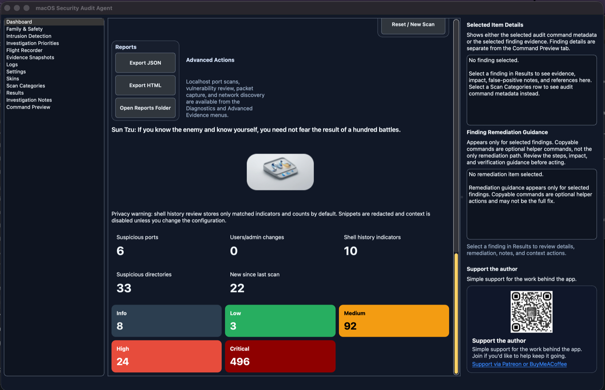
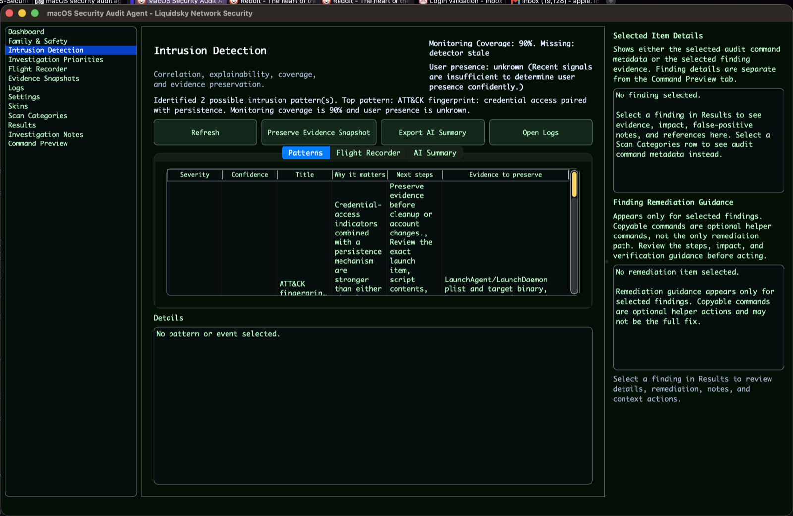
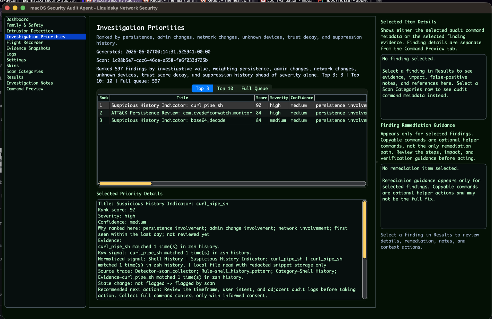
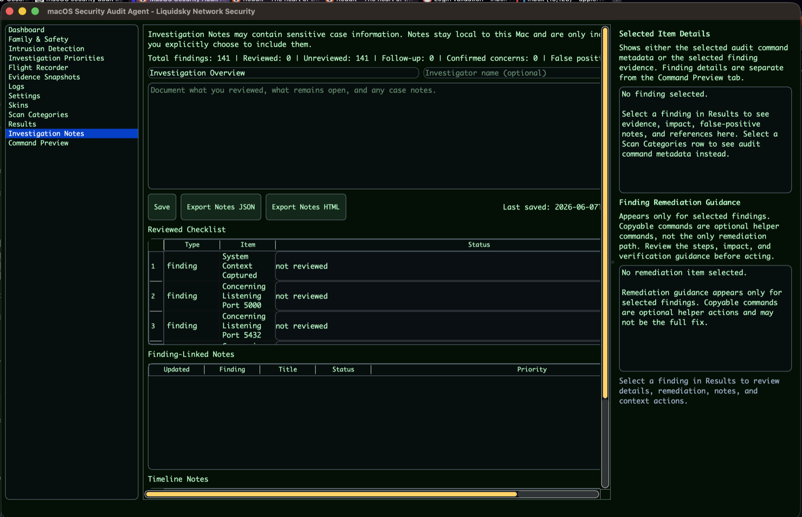
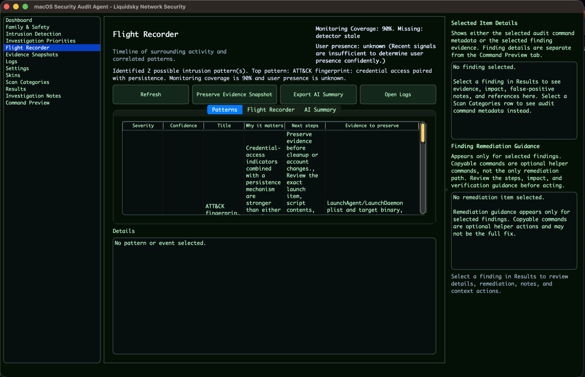
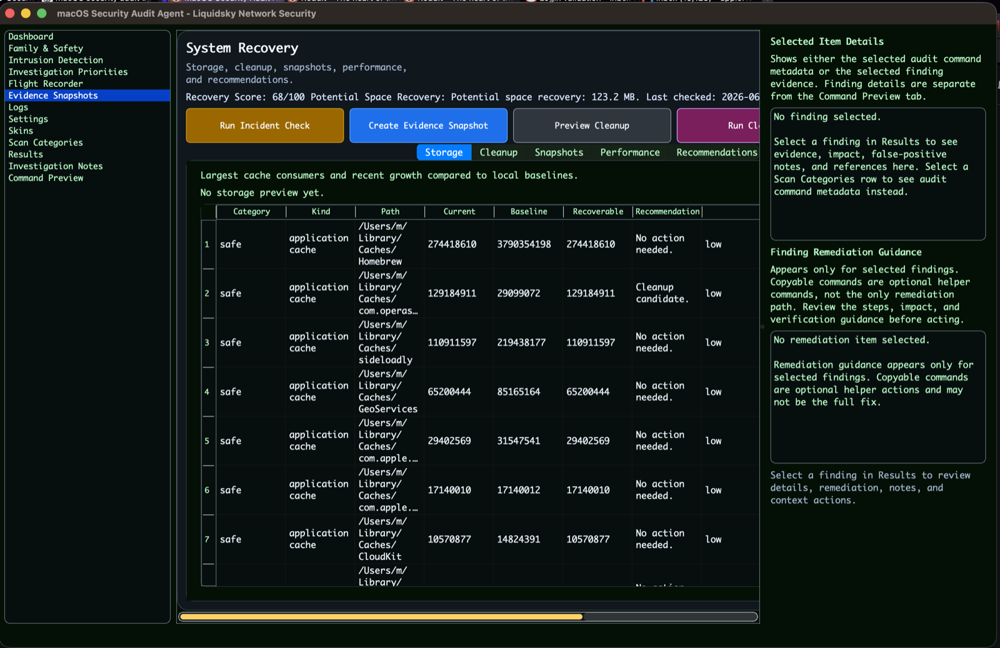
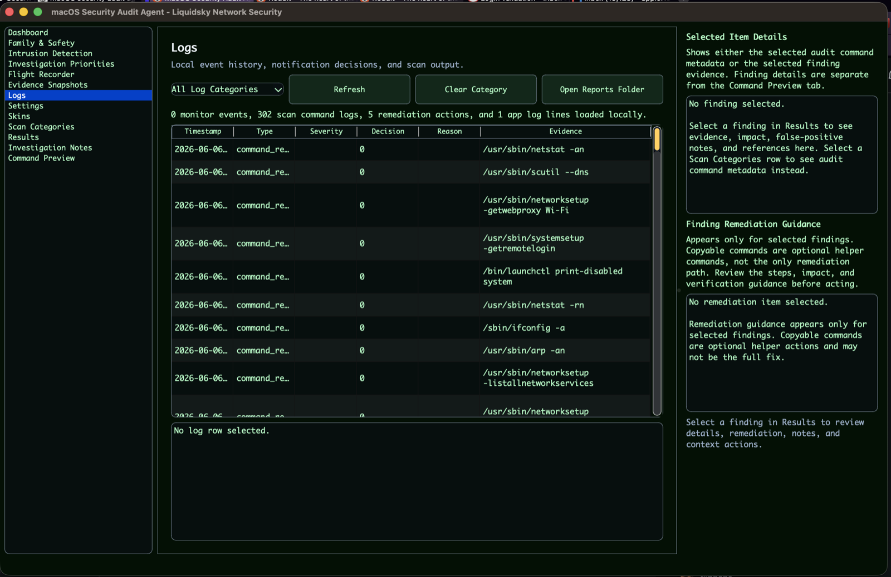
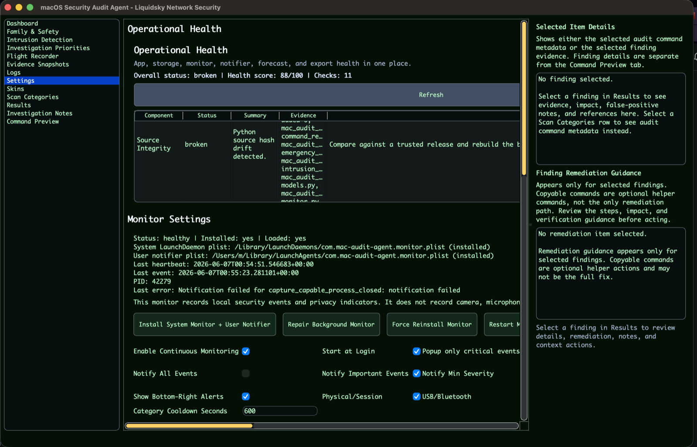
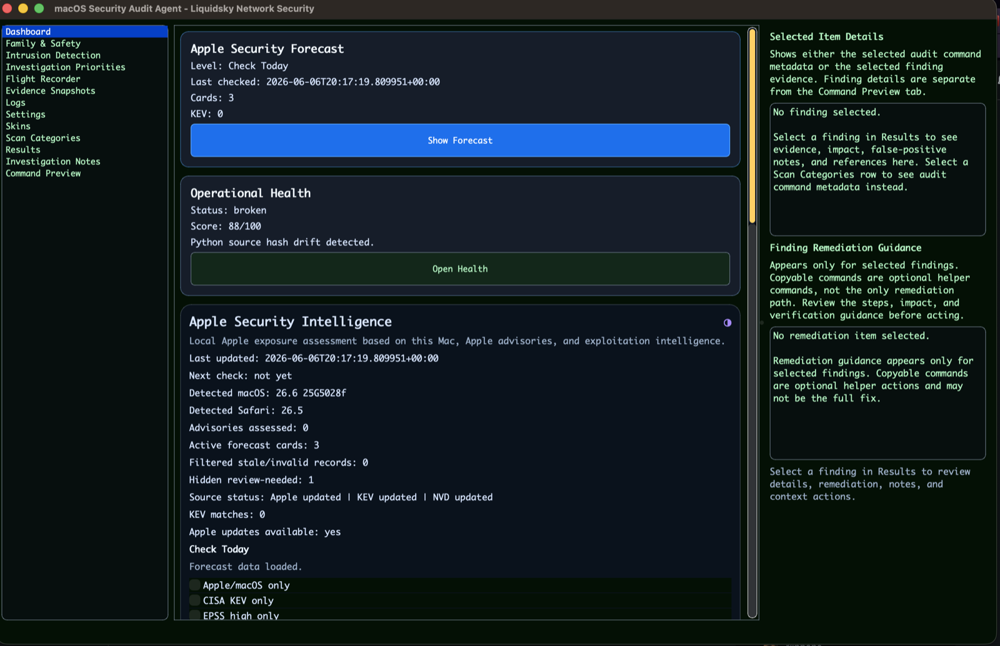
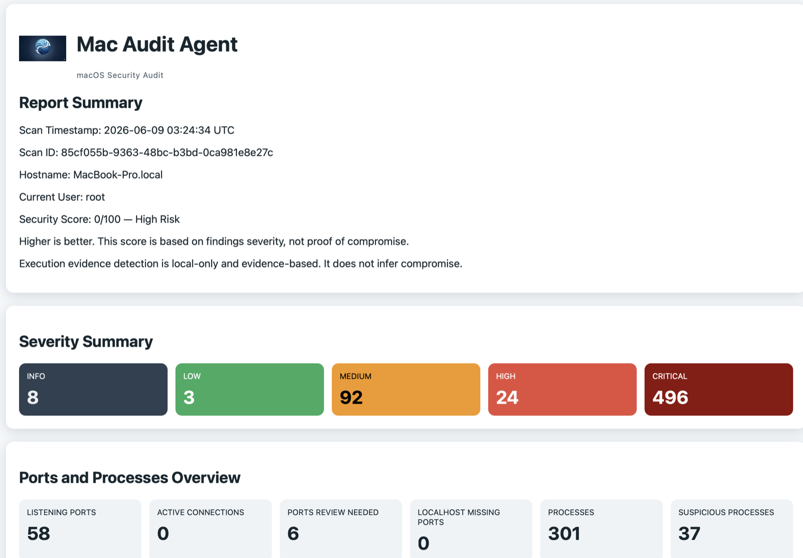

Security Audit Scans
Finds local risks, configuration issues, suspicious files, persistence, users, processes, ports, and security posture concerns.
macOS Security Audit Agent
MSAA · Open Source · Local First · macOS Security · No Telemetry by Default
Local-first macOS security auditing, intrusion detection, monitoring, investigation workflow, Apple security awareness, and evidence preservation without sending data off-device.
macOS Security Audit Agent helps users, analysts, schools, families, and organizations understand what changed on a Mac, identify suspicious activity, preserve evidence, and take action before small warning signs become major incidents.
The visibility gap
Many users, students, researchers, schools, small businesses, and community organizations need better macOS visibility but cannot afford large enterprise EDR platforms. MSAA is designed to provide local-first insight into system changes, suspicious activity, persistence, devices, network changes, and Apple security posture.
What it does
Finds local risks, configuration issues, suspicious files, persistence, users, processes, ports, and security posture concerns.
Watches for important events like USB changes, Bluetooth changes, lid/session activity, remote access changes, daemon changes, and admin changes.
Prioritizes findings, explains why they matter, tracks review state, supports notes, and helps analysts understand what to investigate first.
Creates snapshots and reports before cleanup or remediation so important forensic evidence is not destroyed.
Tracks Mac-relevant Apple security updates and advisories so users know when updates may be critical.
Helps parents, schools, and caregivers review child safety, Screen Time, privacy, content restrictions, and safer settings.
Why it is different
MSAA is built around local evidence, understandable review, and practical visibility for people who need more than a one-time checklist.
Who it is for
Core capabilities
Privacy model
MSAA is designed to keep collected data local. It does not upload telemetry by default and does not inspect private browsing history, cookies, passwords, keychains, messages, or personal content.
Install
pip install macos-security-audit-agentmacos-security-audit-agent
python3 -m pip install macos-security-audit-agent
Some advanced monitoring features may require macOS permissions or administrator approval.
Screenshots











Safety disclaimer
MSAA is a defensive security and audit tool. Findings are not proof of compromise. Users should review evidence, preserve logs during suspected incidents, and only monitor systems they own or are authorized to assess.
Company and support
MSAA is part of a larger mission to make practical macOS security visibility more accessible to researchers, families, schools, and organizations.
Visit Liquidsky Security